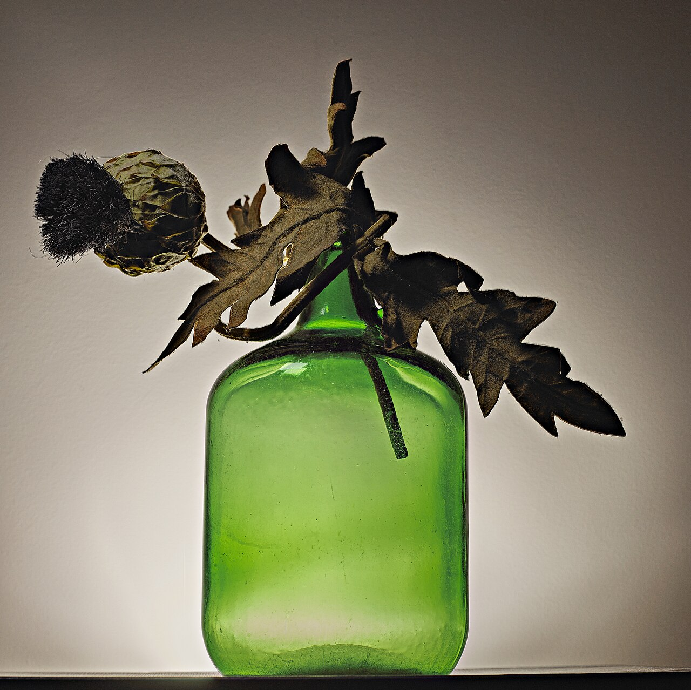
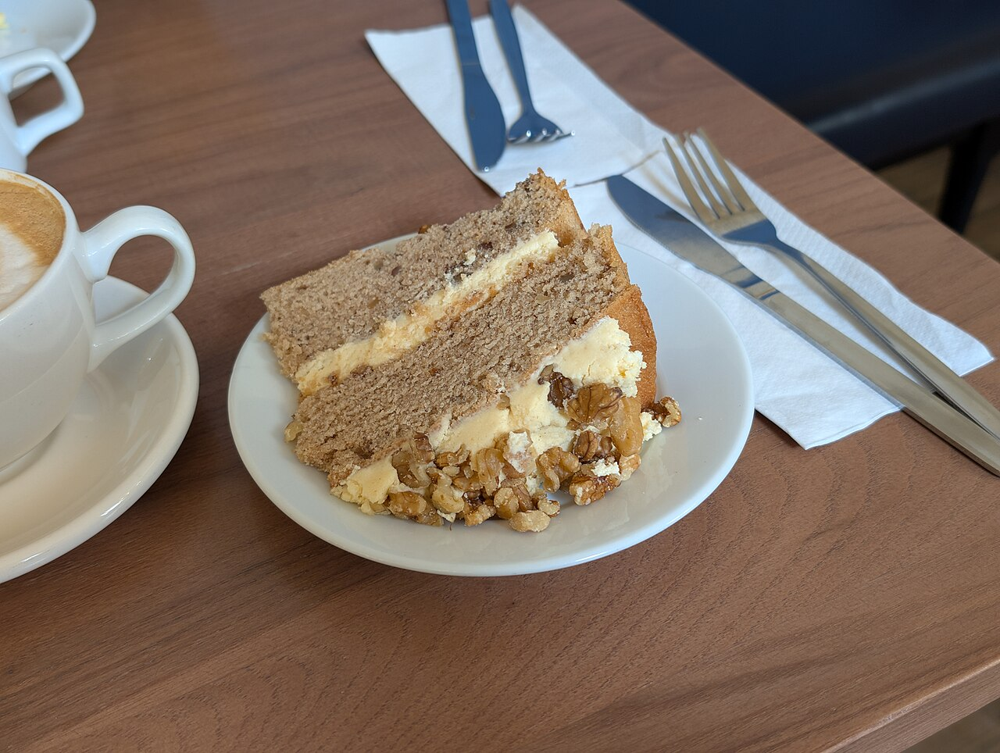

ほっと一息つける場所があると嬉しい、そんな気持ちになれるページでした。
口コミ
口コミが掲載された場合のページの見え方を、短い文でお見せしています。
以下は制作側が作成したイメージ例で、実際のお客様の声ではありません。
ひとりでも誰かとでも、気軽に立ち寄れそうだと感じました。
気軽に足を運べるお店の情報がまとまっていると助かる、という想定の声です。



お店の最新の様子は、Instagramでご覧いただけます。ご来店前のご確認は、お電話でどうぞ。
口コミが掲載された場合のページの見え方を、短い文でお見せしています。
以下は制作側が作成したイメージ例で、実際のお客様の声ではありません。
ほっと一息つける場所があると嬉しい、そんな気持ちになれるページでした。
ひとりでも誰かとでも、気軽に立ち寄れそうだと感じました。
気軽に足を運べるお店の情報がまとまっていると助かる、という想定の声です。


お店の最新の様子は、Instagramでご覧いただけます。ご来店前のご確認は、お電話でどうぞ。
掲載写真はフリー素材のイメージで、店舗の実際の様子ではありません。他地域で撮影されたもの、撮影地が不明なものを含みます。
電話をかける 070-6562-6050